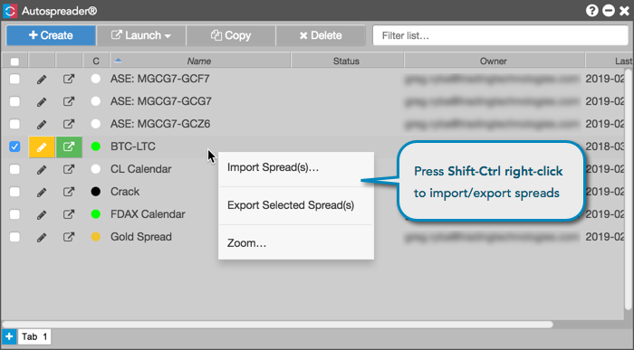

To share (import/export) a synthetic spread configuration in TT, use right-click with focus in the Autospreader GUI to select a spread and click Export Selected Spread(s) to share it with users, or click Import Spreads... to add a synthetic spread configuration that has been shared with you.
